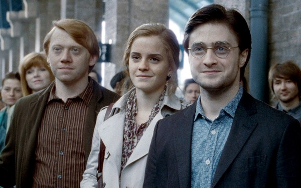

Saga Harry Potter
A História
A saga Harry Potter é uma emblemática saga que ganhou sua popularidade nos anos 2000, graças a seu filme de sucesso que adaptava o primeiro livro. Harry Potter e a pedra Filosofal (1997).Harry é um garoto órfão que mora com seus tios, ele recebeu uma carta para ingressar em uma escola de bruxos,chamada Hogwarts e descobre que na verdade seus pais eram bruxos famosos que morreram quando Harry era apenas um bebe. O garoto passará por varias adversidades e descobertas sobre seu passado e como o mundo a sua volta não é nada como ele pensava. Harry conhecerá amigos, como Hermione Granger e Ron Weasley assim como rivais e até inimigos, como Draco Malfoy e o grande bruxo maligno Lord Voldemort. Harry vai para a escola de bruxos e conhecerá como seus tios haviam mentido para ele sobre como não só havia magica no mundo, mas também uma grande quantidade de bruxos, com um mundo próprio, cheio de Animais Fantásticos, feitiços poderosíssimos e toda uma sociedade com costumes os quais ele nem suspeitava. Tudo disponível na série de sete livros
J.K Rowlling
Joanne Rowling ou JK Rowling é uma escritora britânica de 57 anos, nascida em Yate na Inglaterra no ano de 1965, cresceu em uma casa repleta de livros. Com apenas sete anos ela escreveu sua primeira obra de ficção, chamada de "A História de Um Coelho Chamado Coelho". Durante uma viajem entre Manchester e King’s Cross, ela teve a ideia de criar sua obra mais aclamada, Harry Potter, ao final da viagem, grande parte dos personagens já estavam definidos.
Livros
Harry Potter e a pedra filosofal (1997)
Harry Potter e a câmara secreta (1998)
Harry Potter e o prisioneiro de Azkaban (1999)

Harry Potter e o cálice de fogo (2000)

Harry Potter e a ordem da fênix (2003)
Harry Potter e o enigma do príncipe (2005)
Harry Potter e as relíquias da morte (2007)
Adaptações

Harry Potter e a pedra filosofal | 2001
Harry Potter e a camara secreta | 2002

Harry Potter e o prisioneiro de Askaban | 2004
Harry Potter e o cálice de fogo | 2005
Harry Potter e a ordem da fênix | 2007

Harry Potter e o enigma do príncipe | 2009
Harry Potter e as relíquias da morte parte 1 | 2010
Harry Potter e as relíquias da morte parte 2 |2011
Todos disponiveis em Amazon Prime Video|HBO MAX